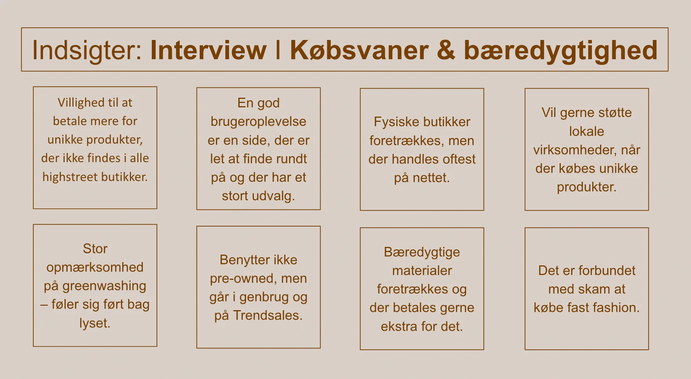
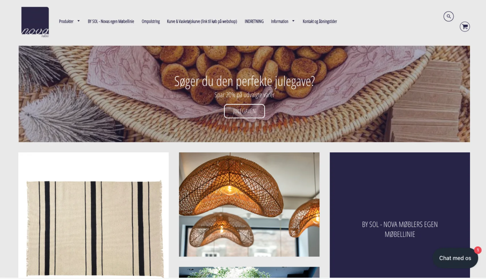

Portfolio
Velkommen til min portfolio. Her findes et overblik over produkterne fra de 6 temaer, som jeg har produceret på første semester af multimediedesign på KEA.
Tema 2: Grundlæggende web
Under grundlæggende web fik vi introduktion til de basale værktøjer, der er
nødvendige for en multimediedesigner.
Vi blev introduceret til grundlæggende html, css og designkonventioner, der bruges i udviklingen
af digitale
brugergrænseflader, digital indholdsproduktion, kommunikation og responsivt webdesign.
Temaets to opgaver bestod af studiestartsprøven og emnesite.
Mit emnesite handler om min passion for syltede rødløg. Siden tager udgangspunkt i 70'er retro
stil med kontrastfarver, retro-fonte og tekstur.
Det
er første gang jeg brugte Illustrator. Jeg brugte derfor meget tid på øvelser fra undervisningen
og youtube tutorials.
Havde jeg haft mere tid til design, havde jeg inkluderet designet med syltede rødlød på flere
sider.
Moodboard
Style tile
Designprocess i Illustrator
Wireframe forside
Mockup til forside
Studiestartsprøven
Under studiestartsprøven fandt jeg både html og css udfordrende, da jeg ikke
tidligere har erfaring med at kode. Jeg fik hjælp af min studiegruppe og tutorerne.
Jeg forbedrede mig
derudover gennem øvelser fra
undervisningen og freeCodeCamp.
Tema 3: Grundlæggende UX
Under grundlæggende UX blev vi introduceret til research, der er med til
sikre, at vi kan udvikle brugervenlige
brugergrænseflader, der baseres på konkrete indsigter og ikke mavefornemmelser. Temaet
inkluderede blandt andet analyse af
eksisterende hjemmesider, desk- og observation research, survey, interviews, fastsættelse af
målgruppe og USP.
Vi blev desuden introduceret til forskellige sketch teknikker – crazy8 og lightning round.
Temaopgaven var at udvikle en prototype for en webshop, der sælger t-shirts, med udgangspunkt i
UX-reseach.
Jeg har foretaget research udfra min idé til webshop, hvor man kan få trygt sine egne designs på
en
t-shirts i god kvalitet. Jeg blev dog desværre syg under temaet og har derfor heller ikke en
endelig prototype for min
webshop. Der findes i stedet en prototype for mit portfolio-website under tema 6.
MyTee
Moodboard
Afsender

Målgruppe

Indsigter Desk Research
Indsigter Observation Research
Indsigter Interview
Crazy8
Sketch
Tema 4: Grundlæggende Animation
På grundlæggende animation blev vi introduceret til javascript. Javascript er
en vigtig del af udviklingen af digitale
brugergrænseflader. Det gør det muligt at skabe interaktive elementer, der kan give en bedre
brugeroplevelse og henlede
en brugers opmærksomhed på specifikke elementer.
Temaets opgave bestod af at udvikle og kode et spil med javascript.
Jeg startede med idéudvikling, hvor jeg blev inspireret af folketingsvalget, der på daværende
tidspunkt var aktuelt.
Stilarten for spilelementerne er kawaii. Kawaii kommer til udtryk
gennem de store hoveder på min karakter og store blanke øjne på mine spilelementer.
Gennem skitser og aktivitetsdiagrammet besluttede jeg hvilke spil mechanics, der skulle være i
mit spil.
Statemachinediagrammet blev udviklet, så der kunne kodes efter det – statemachinediagrammet er
altså javascripts form
for layoutdiagram.
Skitse spilmechanics
Design af spilelementer
Aktivitetsdiagram

Statemachinediagram

Tema 5: Grundlæggende Indhold
Under grundlæggende indhold blev vi introduceret til videoproduktion. Vi fik
kundskaber indenfor arbejdet med
forberedelse til optagelser, optagelser og postproduktion for at kunne formidle indhold gennem
video.
Teamets opgaver bestod af pilotsite og re-design af en eksisterende hjemmeside for en
virksomhed. Sidste opgave foregik
i grupper.
I min gruppe valgte vi at redesigne Nova Møblers hjemmeside. Vi startede med at oprette et
Trello-board for at danne overblik
over processen. Vi oprettede samtidigt et procesdokument i Google Docs, hvor alle kunne skrive
deres inputs.
Jeg var ansvarlig for at definere målgruppe og foretage desk- og observations research.
Jeg redesignede forsiden. Vi lavede hver især en wireframe og prototype, hvorefter vi fremlagde
det for hinanden for at
sikre, at der var genkendelighed i designet på alle sider og alle var enige om designprocessen.
Prototype forside
Wireframe
Trello
Eksisterende forside
Styletyle
Pilotsite
Med pilotsite var formålet at formidle en passion gennem video. Til min pilotvideo
interviewede jeg min veninde
Alberte om hendes passion for renovering af hendes lejlighed.
Inden jeg filmede, gjorde jeg mig nogle tanker om, hvilken stemning jeg ønskede at skabe med
videoen – både i forhold
til de spørgsmål jeg stillede og hvordan det skulle filmes. Jeg vil dog fremadrettet være mere
opmærksom på vigtigheden
af storyboard, da jeg efterfølgende kunne konstatere, at jeg ikke havde fået alle de klip, jeg
ønskede. Jeg ville gerne
have haft flere nærbilleder og været bedre til at få filmet flere vinkler.
Tema 6: Portfolio-eksamen
Til vores portfolio-eksamen er formålet at lave en portfolio-website, hvor vi
skal demonstrere, at vi kan benytte teori,
metode og de værktøjer, vi har lært i løbet af de tidligere temaer. Formålet er samtidigt at
kunne reflektere over
læring på de tidligere temaer.
Jeg startede opgaven med at lave et Trello-board for at danne et overblik over processen. Jeg
lavede derefter
style tile, hvor jeg indsatte udvalgte fonte og farver. Gennem wireframe lagde jeg en plan for
kode for min
portfolio-side, før jeg begyndte at kode.
Prototype til portfolio-eksamen

Klik på billedet for at se prototypen for portfolio-website.
Style tile
Wireframe
Trello
Proces for 'Om mig'
Proces for 'Portfolio'